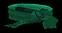

|

Hot Used - Tell Ken Bloodrune Fajin |
Defensa: Nivel: Durabilidad: +25 Defensa Repostar Vida +5 Todas las Resistencias +45 |
|
Cinto de Ivy Ivywrap Fajin |
Defensa: 22 Nivel: 5 Durabilidad: 12 +23 de Daño de Veneno Durante 3 Segundos Ralentiza el Objetivo un 10% +20 Defensa Resistencia al Veneno +35% Duracion del Veneno Reducida en un 50% 15% más Posibilidades de Conseguir un Objeto Mágico |
|
Lenymo Lenymo Fajin |
Defensa: 2 Nivel: 7 Durabilidad: 12 +15 Maná Regenerar Maná 30% Todas las Resistencias +5 +1 al Radio de Luz |
|
Cinto de Warthus Ratman's Rope Cinturon Ligero |
Defensa: 20 Nivel: 15 Durabilidad: 14 +10% Velocidad de Lanzamiento Mayor +100% Daño a los Demonios +17 Defensa +5 de Destreza +35 de Maná Resistencia a los Rayos +23% |
|
El Lemosan Spiritseeker Cinturon Ligero |
Defensa: 28 Nivel: 12 Durabilidad: 14 +50% Daño a los Muertos Vivientes +25 Defensa +30 de Maná Regenerar Maná 50% +5% a la Experiencia Obtenida Reduce Todos los Precios de los Vendedores 5% |
|
Cuerda de Culebra Snakecord Cinturon Ligero |
Defensa: 13-15 Nivel: 12 Durabilidad: 14 +12 Daño de Veneno Durante 3 Segundos +20-30% Defensa Perfeccionada +10 Defensa Repostar Vida +5 Resistencia al Veneno +25% Duracion del Veneno Reducida en un 50% |
|
Cinto del Demonio Belt of Evil Cinturon |
Defensa: 35 Nivel: 25 Fuerza: 25 Durabilidad: 16 +30 Defensa +75 de Vida Consumir Vida -1 -2% a la Experiencia Obtenida 75% Oro Extra de los Monstruos 75% más Posibilidades de Conseguir un Objeto Mágico |
|
Cinturon Caucasico Wreath of Suffering Cinturon |
Defensa: 11 Nivel: 21 Fuerza: 25 Durabilidad: 16 +15 al Daño Máximo 5% Maná Robado por Impacto 10% Posibilidad de Golpe Triturador +125% Defensa Perfeccionada +10 de Fuerza +10 de Vitalidad Consumir Vida -2 |
|
Humo Nocturno Nightsmoke Cinturon |
Defensa: 21-23 Nivel: 20 Fuerza: 25 Durabilidad: 16 +30-50% Defensa Perfeccionada +15 Defensa +20 de Maná Todas las Resistencias +10 Daño Reducido en 2 50% el Daño Infligido Repercute en el Maná |
|
Cinturon Pesado de Cocodrilo Crocodile Wrap Cinturon Pesado |
Defensa: 12 Nivel: 30 Fuerza: 45 Durabilidad: 18 +20% Correr/Andar más Rápido +100% Defensa Perfeccionada +10 de Fuerza +10 de Vitalidad Todas las Resistencias +10 Daño Reducido en 10% Daño de Magia Reducido en 5 |
|
Cinturon Pirata Pirate's Faith Cinturon Pesado |
Defensa: 14 Nivel: 28 Fuerza: 45 Durabilidad: 18 +20% Correr/Andar más Rápido +145% Defensa Perfeccionada +15 de Destreza Daño Reducido en 10% 100% Oro Extra de los Monstruos 25% más Posibilidades de Conseguir un Objeto Mágico |
|
Manto Dorado Goldwrap Cinturon Pesado |
Defensa: 33-35 Nivel: 27 Fuerza: 45 Durabilidad: 18 +40-60% Defensa Perfeccionada +25 Defensa 10% Velocidad de Ataque Aumentada 30% más Posibilidades de Conseguir un Objeto Mágico 50-80% Oro Extra de los Monstruos +2 al Radio de Luz |
|
El Pandemonium Pandemonium Cinturon de Placas |
Defensa: 12 Nivel: 32 Fuerza: 60 Durabilidad: 24 0 al Daño Máximo (Según Nivel del Personaje) +1 Defensa (Según Nivel del Personaje) 0 de Fuerza (Según Nivel del Personaje) +1 de Vida (Según Nivel del Personaje) Resistencia al Frio 0% (Según Nivel del Personaje) Resistencia al Fuego 0% (Según Nivel del Personaje) |
|
Cinturon del Druida Leash of Cerebus Cinturon de Placas |
Defensa: 29 Nivel: 30 Fuerza: 60 Durabilidad: 24 +1 para Habilidades de Invocacion (Sólo Druida) +15% Recuperacion de Impacto más Rápida +1 para Invoca al Lobo Atroz (Sólo Druida) +1 para Invoca al Lobo del Espiritu (Sólo Druida) +147% Defensa Perfeccionada +10 a Todos los Atributos Repostar Vida +3 Resistencia a los Rayps +42% |
|
Hebilla de la Espada Bladebuckle Cinturon de Placas |
Defensa: 46-54 Nivel: 29 Fuerza: 60 Durabilidad: 24 +80-100% Defensa Perfeccionada +30 Defensa 30% Recuperacion de Impacto más Rápida +5 de Fuerza +10 de Desrtreza Daño Reducido en 3 El Atacante Recibe el Daño de 8 |